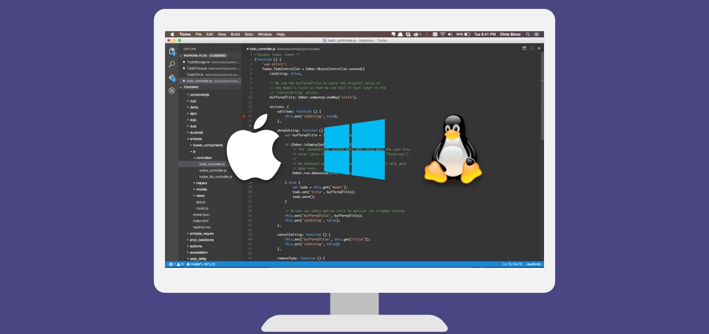

Why Visual Studio Code? - 为什么选用VSCode
VSCode 提供给开发者一个新的简约开发工具的选择，它可以简化开发人员需要的编译-构建-调试流程。VSCode 是VS家族中第一个代码编辑器以及第一个支持OS X，Linux 和 Windows的跨平台开发工具。

VSCode 的初衷是提供一个强大的，迅捷的源代码编辑器，并且可以每日使用。VSCode 有很多开发者在编码及编辑中需要的特性，包括导航，自定义键盘快捷键绑定，语法高亮，括弧匹配，自动缩进以及支持10多种语言的代码片段。
在大型的编程项目中，开发者经常需要投入更多精力在编码而不只是打字。VSCode 内建了不间断的智能代码补全，丰富的语义分析以及代码导航系统，同时也提供了重构功能。VSCode 尤其对于使用 TypeScript 和 JavaScript 的 Node.js 开发提供了强大的支持，这些支持由 VSCode 的底层驱动提供。VSCode 还能为 HTML，CSS，Less，Sass，JSON 等 web 语言提供加工。VSCode 同时集成了包管理器，代码仓库和构建工具来执行一般的任务以加速每日的工作。而且 VSCode 提供了良好的 git 工作流支持，源代码 diff 功能也集成在了编辑器中。
但是开发者不只是写代码，他们还要不断调试。调试功能是 VSCode 最受欢迎的特性，而且这个特性来源于 IDE 中，它能让开发者感觉更方便。VSCode 提供了一个简约，智能的调试系统，并以对 Node.js 的调试作为例子。
在架构上，VSCode 包括了web技术，本地技术以及特定于语言的技术，并把它们最好的部分所结合。VSCode 使用 GitHub Electron Shell，既提供了快速的 web 开发技术，又提供了灵活的本地应用开发支持。Monaco，Internet Explorer 的 F12 工具 使用的是基于HTML的编辑器。VSCode 使用了一个更新、更快的版本。而且VSCode使用了工具服务架构，这允许了它使用与Visual Studio相同的技术，包括 C# 的 Roslyn，TypeScript，以及VS的调试引擎等等。VSCode有一个公共的，可扩展的模型。所以开发者可以构建、使用扩展，并且丰富自己的开发体验。
如果你更喜欢用源代码编辑器开发或者正在构建跨平台的 web 或者云应用。我们诚邀您使用VSCode，并且让我们知道你的想法！
下一步
继续阅读以继续发现：